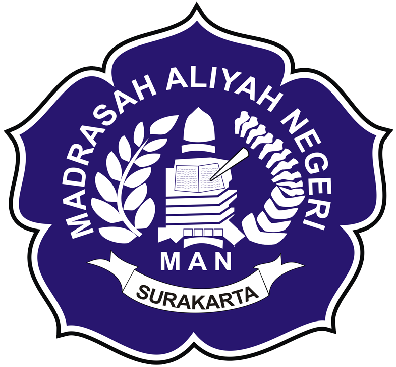
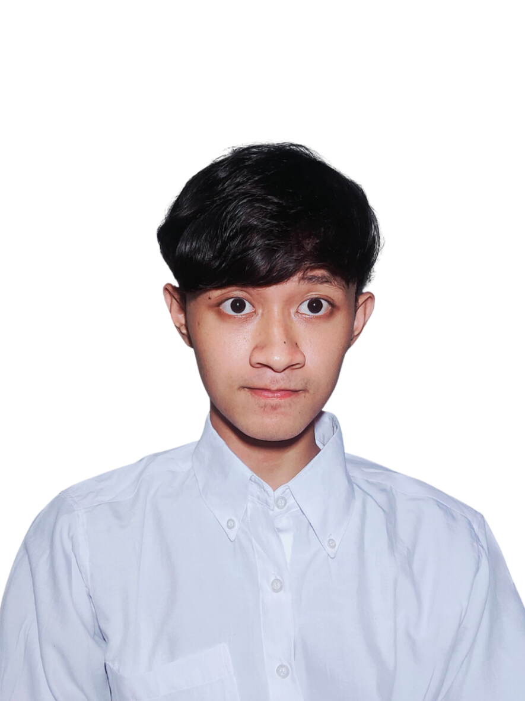
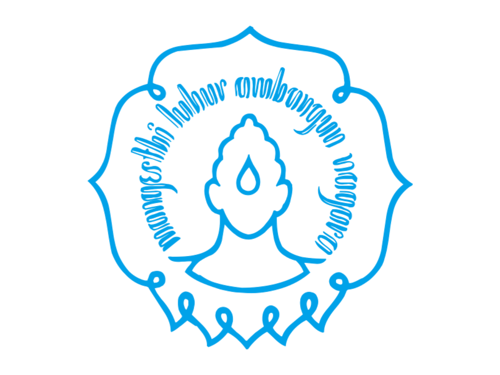

MAN 1 Surakarta
2018 - 2021
Achieved 753,54 on UTBK Score.

Hello, I'm
I build LLM agents, RAG pipelines, and data-driven web apps.
Get To Know More

Quick facts about me
Birthday
Jan 15, 2003
Address
Gondangrejo, Karanganyar
Gender
Male
I am a passionate and dedicated web developer and machine learning enthusiast currently pursuing my Bachelor's degree at Universitas Sebelas Maret. I thrive on solving complex problems and building efficient, user-friendly applications. My goal is to leverage technology to create meaningful and impactful solutions.
My Background

2018 - 2021
Achieved 753,54 on UTBK Score.

Bachelor's in Informatics (2021 - 2025)
GPA: 3.85/4.00
Relevant Coursework
Explore My
PT Qudo Buana Nawakara
Nov 2025 - Present
Fintech Center UNS
Nov 2024 - Nov 2025
Bangkit Academy
Studi Independen, Aug 2023 - Jan 2024
Bangkit Academy
Aug 2023 - Jan 2024
Sept - Dec 2023
UNS
Sept 2021 - Dec 2023
My Achievements
Bidang Karya Tulis Ilmiah
Pusat Prestasi Nasional (Puspresnas) - Kompetisi TIK Mahasiswa Tingkat Nasional paling bergengsi di Indonesia.
Scientific Paper Category
Universitas Sumatera Utara - Scientific Paper Category
Scientific Paper Category
Faculty of Information Technology and Data Science - Universitas Sebelas Maret
Universitas Airlangga - Ideas Competition Category
Universitas Negeri Yogyakarta - National Level Scientific Paper
Scientific Paper Category
Lomba Karya Tulis Ilmiah Nasional
UPN Veteran Jakarta - National Scientific Paper
Universitas Negeri Yogyakarta - National Level Scientific Paper
Browse My Recent
Browse My Recent
Multi-agent architecture using LLMs for task scheduling, vector RAG integration, Whisper speech transcription, and local inference management via Ollama.
Analytical dashboard built for UNS Fintech Center to process stakeholder survey data using KANO, SSI, and IPA satisfaction formulas.
Machine learning regression models optimized with Genetic Algorithms to forecast Hajj expenditures based on inflation and administrative indices.
Curriculum Vitae
Interested in reviewing my detailed academic background, skillsets, and professional experiences? Access the full PDF below.
Download Resume PDF